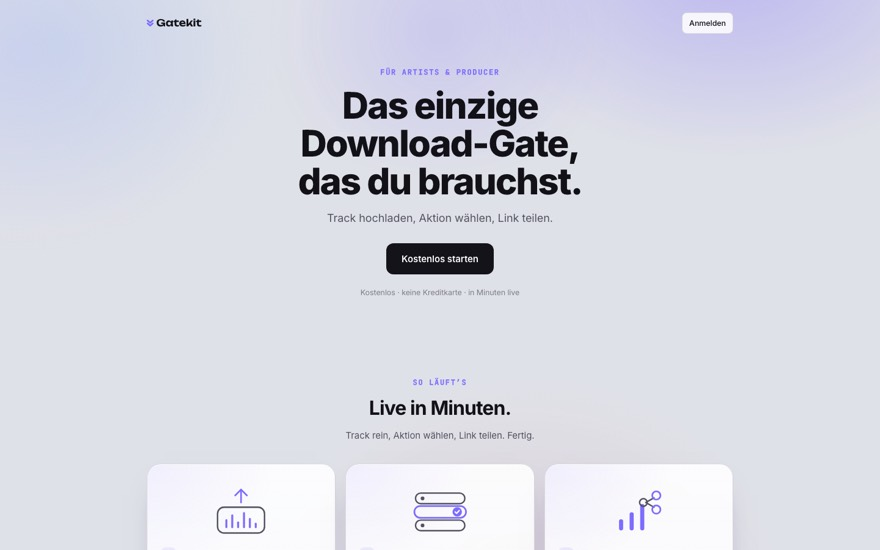
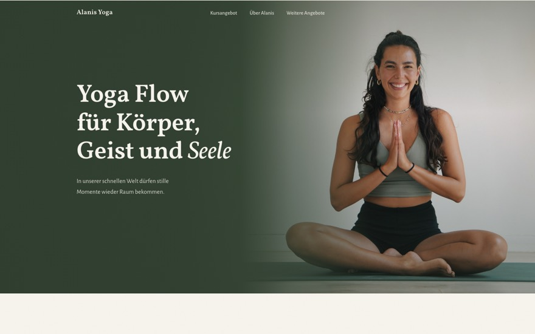
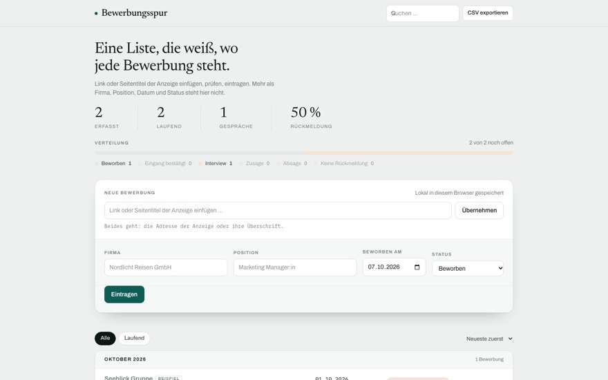

Projekte
Woran ich gearbeitet habe.
Manches für Kunden, manches für mich selbst. Was öffentlich ist, kannst du direkt anklicken.

Gatekit
gatekit.pro ↗Ein Download-Gate für Musik-Produzenten: Track hochladen, Aktion festlegen, Link teilen. Jede SoundCloud-Aktion wird auf dem Server geprüft, nicht nur geglaubt. Dazu E-Mail-Liste, Dashboard und Abo-Abrechnung. Mein eigenes Produkt, von der ersten Zeile bis zu den AGB.

Bepoa
ausprobieren ↗Entstanden aus der eigenen Jobsuche: Ein Algorithmus schlägt jeden Morgen passende Stellen vor, auf Basis von Lebenslauf und Suchkriterien. Die Bewerbungen laufen danach in einer Pipeline vom Fund bis zur Einreichung.

Alanis Yoga
ansehen ↗Die komplette Website für eine Yogalehrerin: Kursplan, Privatstunden, Workshops, Retreats, Business-Yoga, Thai-Massage. Mit eigenen Schriften, Bildergalerie und allem, was danach gepflegt werden muss.

Boniersystem
im Betrieb, nicht öffentlichGäste bestellen per QR-Code am Tisch, der Bon erscheint in Echtzeit auf dem Handy der Bedienung. Danach sagt die Sammelliste, was in einem Weg an Schänke und Küche zu holen ist. Lief auf dem Oktoberfest im echten Betrieb.
Die Bestellungen im Bild sind erfunden.

Bewerbungsübersicht
kleines WerkzeugAn einem Tag entstanden, weil mich eine Tabelle genervt hat: Link einfügen, Stelle und Unternehmen werden ausgelesen, fertig ist die Übersicht. Manchmal braucht es eben keine große Lösung.